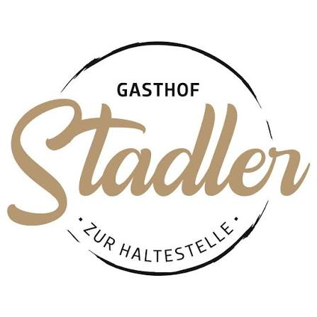
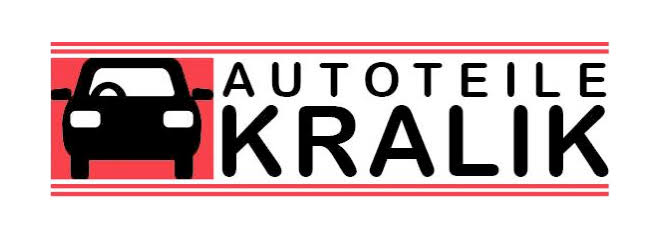
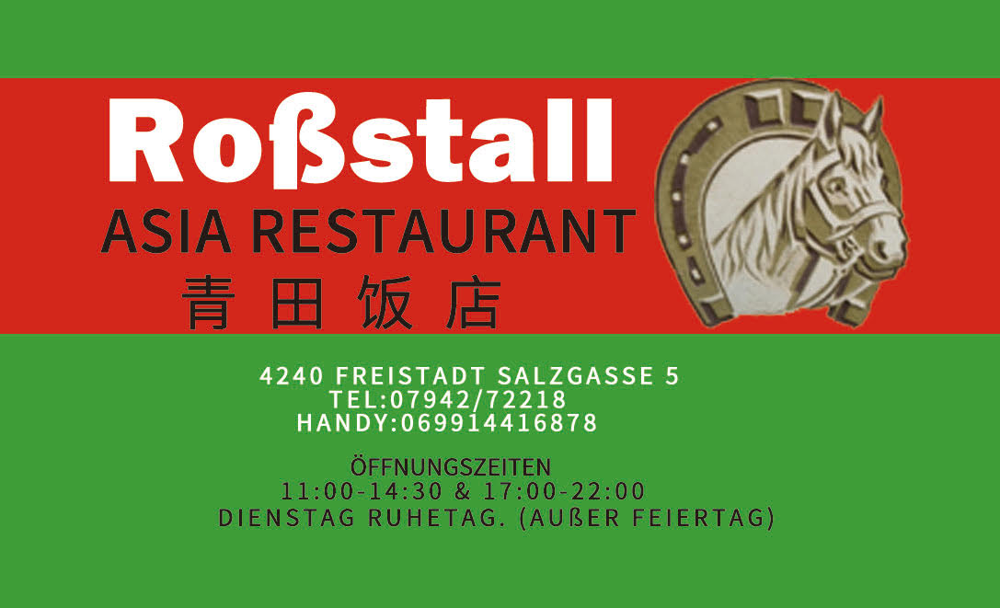

EVENT
Steeldarts Doppel Open
Steeldart-Doppelturnier mit Gruppenphase und anschließender K.-o.-Phase.
Darts WM Finale Live
Das Steeldart-Doppelturnier der Landjugend Lasberg am 3. Jänner 2027 in der Kernlandhalle Lasberg mit anschließendem Public Viewing des Darts WM Finales.
EVENT
Steeldart-Doppelturnier mit Gruppenphase und anschließender K.-o.-Phase.
DATUM
BEGINN
ORT
Am Sportplatz 1, 4291 Lasberg
DISZIPLIN
STARTGELD
pro Doppel inklusive 2 Getränke
PUBLIC VIEWING
Public Viewing des Darts WM Finale im Anschluss
VERANSTALTER
501 · DOUBLE
GRUPPENPHASE
K.-O.-PHASE
DARTTURNIER IM MÜHLVIERTEL
Das Steeldarts Doppel Open bringt Dartspieler nach 4291 Lasberg in die Kernlandhalle. Veranstaltet wird das Steeldart-Doppelturnier von der Landjugend Lasberg.
Gespielt wird am 3. Jänner 2027 ab 13:00 Uhr. Das Startgeld beträgt 30 € pro Doppel inklusive 2 Getränke. In der Gruppenphase wird 501 Single Out gespielt, in der K.-o.-Phase 501 Double Out.
Damit ist das Turnier eine Anlaufstelle für Steeldart-Fans aus Lasberg, dem Mühlviertel und ganz Oberösterreich. Die Anmeldung erfolgt online über die separate Anmeldeseite.
VERANSTALTUNGSORT
Auf Instagram gibt es aktuelle Einblicke rund um die Landjugend Lasberg und das Dartturnier.
Instagram Landjugend Lasberg Hauptwebsite ↗DEIN PLATZ AM OCHE
Jetzt zum Steeldarts Doppel Open in Lasberg anmelden.
🎯 Jetzt anmeldenDANKE FÜR EURE UNTERSTÜTZUNG
Ohne unsere Partner wäre dieses Turnier in dieser Form nicht möglich. Danke an alle Sponsoren, die das Steeldarts Doppel Open unterstützen.


